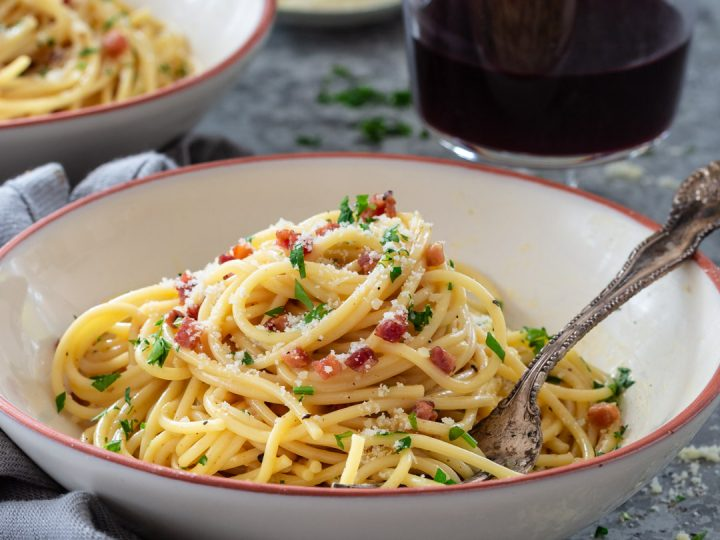

Pasta Carbonara
Ingredients
- 100g pancetta
- 50g pecorino cheese
- 50g parmesan
- 3 large eggs
- 350g spaghetti
- 2 plump garlic cloves, peeled and left whole
- 50g unsalted butter
- sea salt and freshly grated black pepper
- 185g unsalted butter
- 185g best dark chocolate
- 85g plain flour
- 40g cocoa powder
- 50g white chocolate
- 50g milk chocolate
- 3 large eggs
- 275g golden caster sugar
Instructions
Put a large saucepan of water on to boil.
Finely chop the 100g pancetta, having first removed any rind. Finely grate 50g pecorino cheese and 50g parmesan and mix them together.
Beat the 3 large eggs in a medium bowl and season with a little freshly grated black pepper. Set everything aside.
Add 1 tsp salt to the boiling water, add 350g spaghetti and when the water comes back to the boil, cook at a constant simmer, covered, for 10 minutes or until al dente (just cooked).
Squash 2 peeled plump garlic cloves with the blade of a knife, just to bruise it.
While the spaghetti is cooking, fry the pancetta with the garlic. Drop 50g unsalted butter into a large frying pan or wok and, as soon as the butter has melted, tip in the pancetta and garlic.
Leave to cook on a medium heat for about 5 minutes, stirring often, until the pancetta is golden and crisp. The garlic has now imparted its flavour, so take it out with a slotted spoon and discard.
Keep the heat under the pancetta on low. When the pasta is ready, lift it from the water with a pasta fork or tongs and put it in the frying pan with the pancetta. Don’t worry if a little water drops in the pan as well (you want this to happen) and don’t throw the pasta water away yet.
Mix most of the cheese in with the eggs, keeping a small handful back for sprinkling over later.
Take the pan of spaghetti and pancetta off the heat. Now quickly pour in the eggs and cheese. Using the tongs or a long fork, lift up the spaghetti so it mixes easily with the egg mixture, which thickens but doesn’t scramble, and everything is coated.
Add extra pasta cooking water to keep it saucy (several tablespoons should do it). You don’t want it wet, just moist. Season with a little salt, if needed.
Use a long-pronged fork to twist the pasta on to the serving plate or bowl. Serve immediately with a little sprinkling of the remaining cheese and a grating of black pepper. If the dish does get a little dry before serving, splash in some more hot pasta water and the glossy sauciness will be revived.
Brownies
Ingredients
Instructions
Cut 185g unsalted butter into small cubes and tip into a medium bowl. Break 185g dark chocolate into small pieces and drop into the bowl.
Fill a small saucepan about a quarter full with hot water, then sit the bowl on top so it rests on the rim of the pan, not touching the water. Put over a low heat until the butter and chocolate have melted, stirring occasionally to mix them.

Remove the bowl from the pan. Alternatively, cover the bowl loosely with cling film and put in the microwave for 2 minutes on High. Leave the melted mixture to cool to room temperature.
While you wait for the chocolate to cool, position a shelf in the middle of your oven and turn the oven on to 180C/ 160C fan/ gas 4.
Using a shallow 20cm square tin, cut out a square of non-stick baking parchment to line the base. Tip 85g plain flour and 40g cocoa powder into a sieve held over a medium bowl. Tap and shake the sieve so they run through together and you get rid of any lumps.
Chop 50g white chocolate and 50g milk chocolate into chunks on a board.
Break 3 large eggs into a large bowl and tip in 275g golden caster sugar. With an electric mixer on maximum speed, whisk the eggs and sugar. They will look thick and creamy, like a milk shake. This can take 3-8 minutes, depending on how powerful your mixer is. You’ll know it’s ready when the mixture becomes really pale and about double its original volume. Another check is to turn off the mixer, lift out the beaters and wiggle them from side to side. If the mixture that runs off the beaters leaves a trail on the surface of the mixture in the bowl for a second or two, you’re there.
Pour the cooled chocolate mixture over the eggy mousse, then gently fold together with a rubber spatula. Plunge the spatula in at one side, take it underneath and bring it up the opposite side and in again at the middle. Continue going under and over in a figure of eight, moving the bowl round after each folding so you can get at it from all sides, until the two mixtures are one and the colour is a mottled dark brown. The idea is to marry them without knocking out the air, so be as gentle and slow as you like.
Hold the sieve over the bowl of eggy chocolate mixture and resift the cocoa and flour mixture, shaking the sieve from side to side, to cover the top evenly.
Gently fold in this powder using the same figure of eight action as before. The mixture will look dry and dusty at first, and a bit unpromising, but if you keep going very gently and patiently, it will end up looking gungy and fudgy. Stop just before you feel you should, as you don’t want to overdo this mixing.
Finally, stir in the white and milk chocolate chunks until they’re dotted throughout.
Pour the mixture into the prepared tin, scraping every bit out of the bowl with the spatula. Gently ease the mixture into the corners of the tin and paddle the spatula from side to side across the top to level it.
Put in the oven and set your timer for 25 mins. When the buzzer goes, open the oven, pull the shelf out a bit and gently shake the tin. If the brownie wobbles in the middle, it’s not quite done, so slide it back in and bake for another 5 minutes until the top has a shiny, papery crust and the sides are just beginning to come away from the tin. Take out of the oven.
Leave the whole thing in the tin until completely cold, then, if you’re using the brownie tin, lift up the protruding rim slightly and slide the uncut brownie out on its base. If you’re using a normal tin, lift out the brownie with the foil. Cut into quarters, then cut each quarter into four squares and finally into triangles.
They’ll keep in an airtight container for a good two weeks and in the freezer for up to a month.